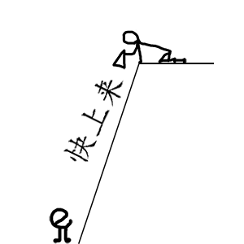
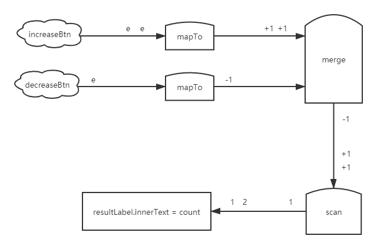

同事邀我写一篇前端技术发展史，用于新员工培训。
在查资料写正式文档之前，我要先写下自己的所知所感，以免到时分不清 什么东西是自己的、什么东西是别人的。
1995 年 网景公司想给网页增加一些交互性，花两周时间创造了 javascript，用来控制网页中的元素。
两周时间创造的语言一定精致不到哪儿去。
但巧妙的是 这门语言非常得开放灵活，开发者可以自己定制它。
例如：
给 String 添加个首字母大写的方法：
String.prototype.capitalize = function() {
return (
this.charAt(0).toUpperCase() + this.slice(1)
);
};
"hello".capitalize(); // Hello修改 Date toString 方法：
Date.prototype.toString = function() {
return (
this.getFullYear() +
"/" +
(this.getMonth() + 1) +
"/" +
this.getDate()
);
};
new Date().toString(); // 2019/12/21因为这种开放性 javascript 吸收了大量开发者的智慧，变得越来越好。
这种策略对我很有启发。
一件事我自己搞不定，那可以把它变成大家的事，用集体智慧解决它。
道理简单，但难在放低姿态、保持开放的心态。
吸收了开发者集体智慧后，javascript 标准【准确点是 ECMAScript 标准】发展得很快。
但碰到了一个问题：标准跑到了半山腰，浏览器们还在山脚下。

毕竟程序跑在浏览器上，标准再好，浏览器不支持，开发者也没法用。
而且众多浏览器对标准的支持情况也不一样，不仅是 javascript，还包括 html 和 css。
那个年代的招聘要求里都有一条“能解决浏览器兼容性问题”。
浏览器兼容性问题让开发者很头疼。“帮开发者解决浏览器兼容性问题”成了各框架的重点任务。
其中玩得最大的是 ExtJS。
html、css、javascript 兼容性问题它全包了。
思路是这样的：
html、css：开发者不要写了，自然就不需要关心 html、css 兼容性问题了。
html、css 写法
<style>
.large-btn {
font-size: 2em;
padding: 10px;
}
</style>
<button class="large-btn">提交</button>ExtJS 写法
{
xtype: 'button',
text: '提交',
scale: 'large'
}框架再把这个对象转成 Dom。
了解 React 的同学有没有似曾相识的感觉？
React 把 JSX 表示的虚拟 Dom 转成 Dom。框架过时了，思想不过时。
javascript：开发者使用 ExtJS 的 api，而不用 ECMAScript 标准的 api。
例如拷贝 b 对象的属性到 a 对象上：
ECMAScript 标准
Object.assign(a, b);ExtJS
Ext.apply(a, b);ExtJS 让开发者完全不用考虑浏览器兼容性的问题，大幅提升了开发效率。
但代价是：
开发者和 html、css、javascript 标准被隔离开，
开发者像是在用一门新语言编程，被绑架在这个框架上了。
再后来 babel 出现了，开发者终于可以拥抱最新 ECMAScript 标准了。
babel 的思路是这样：
开发者用最新 ECMAScript 标准去写代码，然后通过 babel 编译，转成浏览器支持的代码。
至此，兼容性问题完美解决了。
下面我再从”事件驱动“这个角度来说说技术的变化。
早些年前端流行 MVC 框架，MVC 就使用了事件驱动。
事件太灵活。
茴香豆的“茴”有四种写法：
一个事件的处理 有 N 种方式：
Controller 在监听，这些 事件、监听器 的代码散落在很多地方，它们通过 事件传递、变量 联系在一起。
只有把这些代码找全了、调用顺序看清楚了，才能搞明白数据流是怎么走的。
数据流走向不直观 成了 事件驱动 被人诟病的问题。
对于一个问题，有两种常见的处理方式：
下面来看看这两种处理方式的应用。
从“解决问题”的思路出发，出现了函数式响应式。
函数式响应式 直接以“数据流走向”为视角编程，写代码就是画流程图。
看个计数器的例子：
代码：
merge(
fromEvent(increaseBtn, "click").pipe(mapTo(1)),
fromEvent(decreaseBtn, "click").pipe(mapTo(-1))
)
.pipe(scan((acc, cur) => acc + cur, 0))
.subscribe(
count => (resultLabel.innerText = count)
);流程图【下图的 e 代表 click event】：

以“数据流走向”为视角编程：数据流相关的代码放在了一处，代码写的就是怎么操作数据流。
数据流走向清晰了，但新的问题出现了：
对于一些场景没有好的解决方案。例如：
数据流共 10 段，第 10 段需要第 1 段的数据。
以下解决办法我觉得都不完美：
zip、combineLatest 等。
因为存在以上问题，工作中我只敢在 ajax 请求 或 小项目 里使用函数式响应式，不敢大范围使用。
再来看另一个思路：消灭提出问题的人。
翻译一下：你有问题，我就不用你了，我要另辟蹊径。
典型代表：
React 不通过事件传递数据了，改为通过 props 单向传递数据，只能父到子。
这就好像从 A 处到达 B 处，
事件驱动不限制交通方式，有的人走路、有的人开车、有的人坐飞机……
React 规定大家都得开车去。
开发的自由度变小了，大家编码方式更一致了。
虽然一些场景下代码实现变麻烦了，但以往项目的经验告诉我：比起写高效的代码，写一致的代码更重要。
这也让我对框架有了新的认识，框架可以从两个方面提高开发效率：
- 提供成熟的解决方案，如 组件、路由……少量代码就能完成复杂的功能。
- 限制开发的自由度，让日后维护和开发新功能变得容易。
我以“浏览器兼容性”、“事件驱动 数据流走向不直观”这两个问题入手，谈了前端技术的变化。
大家还有哪些角度呢？欢迎评论交流。